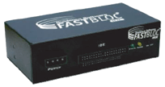

Torna alla pagina di Gestione degli incidenti informatici
:: Strumenti di investigazione e forensic ::
Ove non meglio specificato, tutti i testi tra virgolette vanno intesi come citazioni letterali dalle slide del prof Dario Forte, 2008.
Strumenti operativi
Gli strumenti operativi (o standard operativi) sono quelli utilizzati dal response team per la gestione degli incidenti informatici. Gli strumenti più diffusi di Incident Management permettono di seguire l'intero corso dell'incidente e generare report compatibili con i più rigorosi standard internazionali; inoltre consentono di effettuare un'attenta analisi economica dei danni, considerando gli asset coinvolti, le ore uomo impiegate (o sprecate) e altri costi collaterali (spese legali, recupero marketing, ...).
Vediamo quali features dovrebbe avere un software di questo tipo:
- Report dettagliato con tutte le informazioni relative all'incidente e rispettoso dello standard IODEF. Lo IODEF è un metalinguaggio basato su XML il cui standard si trova su
ietf.org e che garantisce univoca interpretazione e portabilità del report. E' estendibile con moduli aggiuntivi certificati, purché rispettino i prerequisiti e non creino dipendenze
- Timeline (tabella dei tempi), una sorta di log in cui viene preso nota di tutto ciò che accade nel sistema e di tutte le operazioni effettuate dagli investigatori. Deve consentire un certo margine di personalizzazione, ad esempio dando la possibilità di aggiungere informazioni sul nome dell'utente che ha generato un evento
- Analisi Grafica delle statistiche relative all'incidente e agli impatti monetari conseguenti
- Allegati, ad esempio lettere pervenute dalla polizia giudiziaria, log, file di configurazione, ...
- Ricerca, fondamentale per verificare se l'incidente informatico in analisi ha analogie con altri
- Dashboard, che visualizza un riepilogo delle principali informazioni legate al caso presenti nel database
- Sistema di Messaggistica Separata per evitare compromissioni
- Modulo Supervisor che gestisce gli utenti, assegna i task, garantisce la comunicazione tra operatori e controlla la dashboard
- Possibilità di inviare e ricevere report esterni
Validazione dei toolkit
Tra le attività di gestione del laboratorio di investigazione una delle più importanti riguarda la validazione degli strumenti, la tool validation. Può essere interna quando è svolta in laboratorio ed è frutto di un processo di verifica; ad esempio dopo aver scaricato una iso ne verifico gli MD5 per vedere se è corrotta, faccio una serie di test standard e verbalizzo tutto. Se è invece effettuata da terze parti trusted viene chiamata esterna; ad esempio PTK è validato sia in laboratorio con test di configurazione, sia dalla comunità con test sullo strumento stesso. In entrambi i casi, vengono spesso utilizzati strumenti di testing creati appositamente, chiamati DFTT (Digital Forensics Testing Tool).
Ultima considerazione va fatta sulle validazioni esterne fatte da organismi come il NIST (National Institute for Standard and Technologies), che hanno la caratteristica di avere la Recognition in Court, ovvero sono attestati e accertati in tribunale in quanto la loro validità ha riconoscimento giudiziario.
EnCase
EnCase è tra le suite di investigazione commerciali più utilizzate e diffuse al mondo; gira sotto Windows ed è prodotto dalla Guidance Software. Ne esistono diverse versioni che variano in funzionalità, performance e ovviamente prezzo; noi tratteremo EnCase Forensic, considerato lo standard nella computer forensic, che lavora standalone ed è facilmente estendibile con una nutrita serie di moduli aggiuntivi.
Una delle maggiori critiche che vengono mosse a questo prodotto è che non rende visibile il codice sorgente del programma, che dunque non può essere soggetto alla validazione di tutta la comunità scientifica; è comunque validato dal NIST, che per fini legali è più che sufficiente. Altro aspetto negativo è il prezzo, dato che la versione Forensic costa circa 4000 €, la Lab tra i 30 e i 40000 € ed EnCase Enterprise può arrivare al milione e mezzo di euro.
Nei prossimi paragrafi illustreremo una serie di funzionalità offerte da EnCase Forensic.
Preview
La funzione Preview consente all’investigatore di visionare in anteprima il contenuto del media in esame prima di effettuare un'acquisizione. Ciò che si guadagna in velocità lo si perde parzialmente nell'integrità dei dati, dato che una preview comporta l'inevitabile alterazione di alcune informazioni (come ad esempio la data di ultimo accesso).
Acquisizione
EnCase forensic supporta i principali media (floppy, dischi ottici, hard disk, periferiche di storage, ...) e molti tipi diversi di file system, tra cui ovviamente quelli di Windows (FAT12, FAT16, FAT32, NFTS), Macintosh (HFS, HFS+), Linux (EXT2, EXT3, ...), Solaris, cellulari e molti altri ancora.
Con l'acquisizione abbiamo la creazione delle immagini disco, ovvero copie di servizio che - fedeli al principio di preservation - consentono di lavorare su un media garantendo l'integrità dell'originale. Questa fase si compone di diversi task:
- sanitize del media. Si tratta della "sterilizzazione" del disco su cui verrà memorizzata l'immagine per evitare che rimanenze dei dati delle vecchie indagini possano inquinare quelle attuali. Questa procedura prende il nome di
wiping ed EnCase mette a disposizione dell'utente diversi algoritmi di questo tipo, tra cui il DoD e il Gutmann. Il primo prevede la sovrascrittura del disco per tre o sette volte con sequenze di 0 o di 1 (o con pattern casuali); nel secondo invece si arriva addirittura a 35 passaggi di sovrascrittura. L'efficacia dei due metodi è equalmente riconosciuta, ma il benchmark attuale è il DoD dato che una sanitation di 2-3 Tera di dati con il Gutmann può impiegare diversi giorni. La scelta dell'algoritmo di wiping va comunque motivata e documentata, ed è consigliabile per un laboratorio di forensic che una volta scelto uno non lo si abbandoni più

- acquisizione bit-by-bit e conservazione dei dati. L'acquisizione vera e propria può essere effettuata collegando il disco da esaminare con quello in cui conservare i dati, o per mezzo di cavi (parallelo, firewire, USB, ethernet) o allacciandoli entrambi alla stessa scheda madre. Il sistema più efficiente e sicuro è però Fastbloc, un dispositivo hardware prodotto dalla stessa Guidance Software che protegge il drive da qualsiasi tipo di scrittura (accidentale o volontaria) e garantisce così un trasferimento rapido e controllato. Va infine segnalato che alcuni duplicatori hardware consentono di distinguere tra copia bitstream e copia fisica, quest'ultima che contiene qualche informazione in più sul media
- copia ed analisi di dischi RAID e di volumi cifrati (come
Saveboot). L'accesso a questi ultimi non avviene bucando i sistemi di sicurezza, ma grazie ad accordi tra EnCase e i loro produttori. Questi ultimi assicurano infatti alcune modalità di accesso preferenziali alternative.
Analisi
Una volta acquisite le immagini del disco queste devono poter essere analizzate. EnCase fornisce diverse features che potenziano questa attività:
- un'interfaccia intuitiva per analizzare il contenuto dei documenti che si hanno a disposizione
- verifica degli hash
- raccolta di informazioni dal database Active Directory di Windows, da cui è possibile carpire username, SID, ultimo accesso al sistema e altro ancora
- possibilità di creare e personalizzare alcune funzioni scrivendole nel linguaggio proprietario EnScript, molto simile al PERL e i cui programmatori sono molto richiesti
- "File Signature Analysis"
Visualizzazione di dati e risultati
EnCase fornisce una serie di strumenti per potenziare la visualizzazione di dati e risultati (gallerie e timeline comprese). Tra questi elenchiamo (dalle slide di Dario Forte, 2008):
- "possibilità di filtrare i dati sulla base di molteplici criteri"
- "condizioni di filtro e possibilità di eseguire query"
- "visualizzazione di file cancellati e frammenti di file nello spazio non allocato o all'interno dello slack-space" (ovvero lo spazio sprecato per via della frammentazione interna)
- "folder recovery"
- "log file e eventlog analysis"
- "analisi del registro di sistema"
- "ricerca di contenuti", anche all'interno di mail e nella cronologia di navigazione
Report
Concludiamo la panoramica delle funzionalità offerte da EnCase Forensic riportando ovviamente quella che riguarda la stesura dei Report, facilitata da molti automatismi e da altri utili accorgimenti come ad esempio la possibilità di usare bookmarks.
UTK
Un'altra famosa suite commerciale di strumenti per la digital investigation è Ultimate Toolkit (UTK) della AccessData. UTK è composta da:
- Forensic Toolkit (FTK), che non solo supporta un gran numero di media e file system, ma è anche in grado di importare formati creati da EnCase (come ad esempio Expert Witness). Da quest'ultimo si distingueva per il fatto che indicizzava le immagini dei dischi in un database prima ancora di cominciarne l'analisi; se da un lato questa operazione faceva perdere un po' di tempo, dall'altra consentiva di risparmiarne molto di più nelle ricerche e in altre attività. L'ultima versione di EnCase adotta la stessa strategia, così come del resto anche PTK. Altre caratteristiche di FTK sono la possibilità di avere l'anteprima di un vastissimo numero di formati di file, di effettuare rapidamente ricerche avanzate (anche con l'utilizzo di espressioni regolari), di esaminare email e file compressi e di rimuovere dei file sulla base di varie opzioni (ad esempio in funzione degli hash)
- FTK Imager è lo strumento che effettua preview dei dischi e ne crea le copie di servizio, il tutto ovviamente senza alterare alcun dato
- Password Recovery Toolkit (PRTK), più efficiente ed efficace di quello di EnCase e che agisce su più fronti (dal bruteforce al dictionary attack, eccetera)
- Registry Viewer, ovvero uno strumento per l'analisi del registro di Windows che mette a disposizione funzioni aggiuntive come la ricerca in base a chiavi e/o valori e la generazione automatica di report
- Distribuited Network Attack (DNA), che fa uso della potenza di calcolo di più computer (i client DNA) per la decrittazione di file protetti da password, in modo che questa avvenga più rapidamente e con minor aggravio sulle performance dei singoli sistemi
- Wipe Drive, la consueta funzionalità di wiping dei dischi per garantire che i dati di un caso non siano inquinati da quelli precedenti. UTK supporta solo l'algoritmo DoD
Wetstone
Wetstone è una software house che produce diversi strumenti per la digital forensic, tra cui Gargoyle Investigator, Stego suite e LimeWire Investigator.
Gargoyle Investigator verifica con rapidità la presenza di malware nel sistema compromesso. Tale ricerca avviene confontando ogni file con le signature memorizzate in un database interno in base alle quali classificherà gli eventuali programmi ostili rilevati. La versione Forensic Pro Edition costa 1195 $, mentre quella Enterprise - che offre una serie di funzionalità aggiuntive come l'esecuzione da remoto - arriva a 1995 $.
Stego suite è tra i più efficaci strumenti di rilevazione ed analisi di dati steganografici, dove per steganografia si intende una tecnica utilizzata per nascondere l'esistenza di un messaggio (e non il suo contenuto, come avviene con la crittografia). Non esiste un metodo univoco per realizzarla, né tanto meno un unico algoritmo, tuttavia nella maggior parte dei casi i messaggi sono nascosti all'interno di un'immagine (vedi l'esempio in questa pagina su wikipedia) o di file audio. L'approccio di Stego suite per rilevarli è cercare le signature dei programmi più comuni utilizzati per implementarla, una strategia che dà ancora oggi buoni risultati.
Stego suite costa 1495$ ed è formata da tre componenti, che possono essere usati anche in parallelo:
- stego watch, che effettua le ricerche delle signature nel file system
- stego analyst, che analizza nel dettaglio immagini, tracce audio e testi
- stego break, che cerca di forzare le password
Infine abbiamo LimeWire Investigator (9995 $), un ottimo strumento che consente di effettuare una Live System Analysis senza interrompere le normali operazioni del sistema in esame. L'analisi avviene sulle informazioni volatili (memoria, registri, processi e porte attive, stato dei programmi, ...) e con un rapporto 1:1 , cioè su una sola macchina alla volta; EnCase permette invece un rapporto 1:n .
Prodiscover
Concludiamo la panoramica sui principali tool di forensic con Prodiscover della Technology Pathways, molto utilizzato per la live analysis e live acquisition via network TCP/IP. Come LimeWire anche Prodiscover consente di monitorare un unico target alla volta, sul quale deve girare un agente che può essere installato o fatto partire da CD live o chiavetta USB (la scelta va giustificata sulla documentazione perché comporta la modifica dello stato della macchina). E' progettato secondo le specifiche del NIST, ed è indicato per sistemi medio-piccoli.
Prodiscover può effettuare l'acquisizione di RAM e hard disk sia da locale che da remoto, supporta un buon numero di file system e consente di scegliere tra due formati di immagini del disco: Unix dd o un formato proprietario. Consente inoltre di lavorare su zone nascoste dei dischi come le HPA (Host Protected Area), a patto di installare driver ad hoc sulle macchine utilizzate per l'analisi.
Le funzionalità offerte come supporto all'analisi e alla generazione di report sono pressoché identiche a quelle viste finora. In particolare segnaliamo il supporto e l'utilizzo di script in PERL per l'automatizzazione di funzioni e procedure, script che ovviamente devono essere sottoposti al controllo della comunità scientifica per essere validati.
Torna alla pagina di Gestione degli incidenti informatici